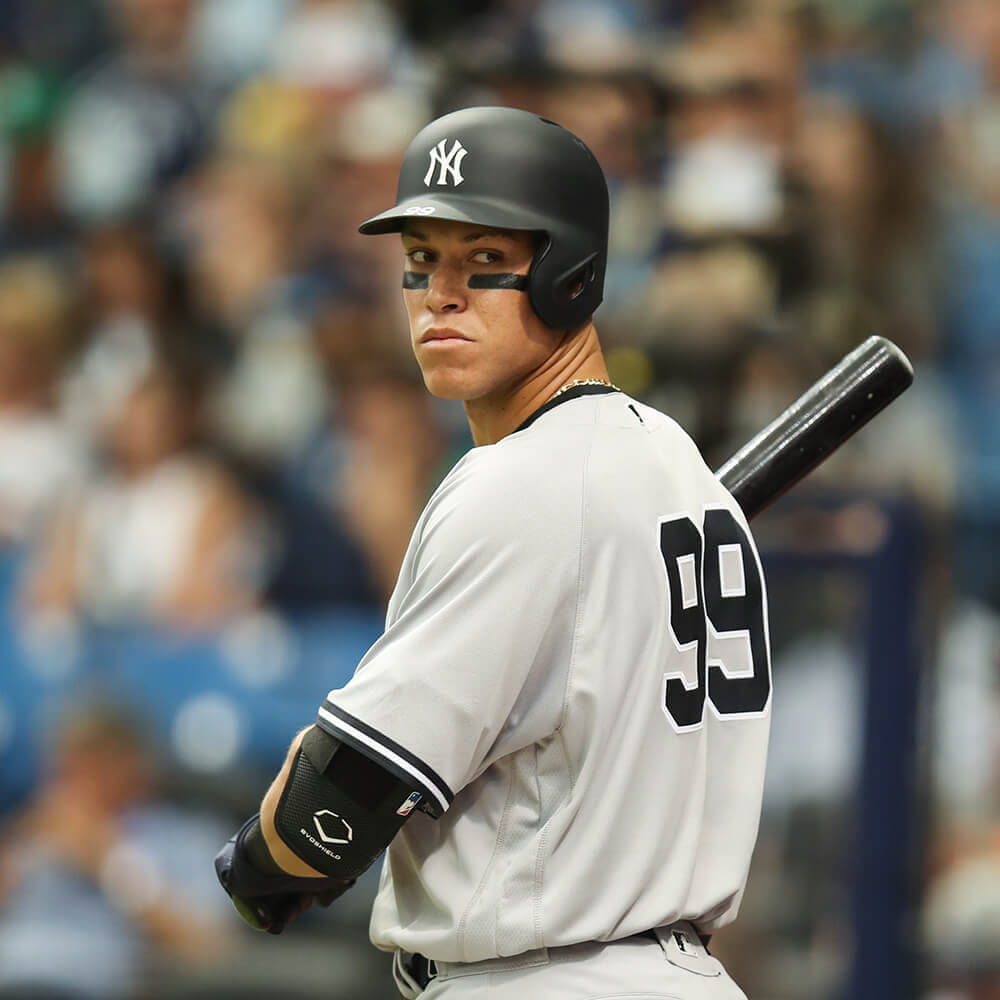

New York Yankees Player Stats
This website allows you to track the stats of the
Yankee's players.All of you fans can be updated on their favorite player’s batting averages, home runs and RBI’s.
For those intrested in the pitchers track the ERA and record of all the pitchers on the staff.
Add info here.
 |
 |